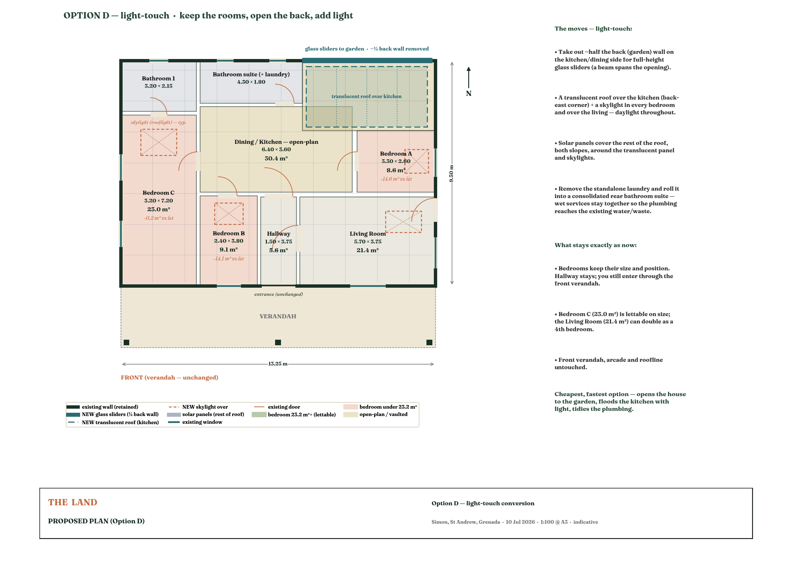

The house · Simon, St Andrew, Grenada
Room moodboards
One direction across the house — Island Shaker: the honesty, utility and restraint of Shaker craft — warm pale timber, built-ins, simple joinery, muted painted colour — crossed with Caribbean island light, cane and greenery. White walls, natural materials, minimal adornment; the character comes from black ironwork (the one metal), richly textured natural-fibre soft furnishings, and the house's own carved-mahogany furniture kept and reframed. Each room carries one painted accent.
Grounded here
The direction isn't imported — it answers this ground. The house as it stands, the view it looks onto, and the Caribbean vernacular nearby: fretwork verandahs, pastel timber, pitched roofs raised off the earth. The rooms that follow take their cue from these.


Keep the rooms, open the back, add light
The Phase 0 refurb is deliberately light-touch — every room stays where it is, the hallway and front entrance unchanged. Three moves do the work: half the back wall opens to the garden in full-height glass sliders; a translucent roof floods the kitchen and a skylight lifts every bedroom; and the standalone laundry rolls into a consolidated bathroom suite so the plumbing stays together. Solar covers the rest of the roof — the cheapest, fastest route, opening the house up without changing what it is.

Bring the outside in
The shared heart of the house — relaxation and activity in one room, glass doors thrown open to the garden so the vaulted room and the outside read as one. Light and airy, anchored by the house's own carved-mahogany daybed reframed in linen, with cane chairs, jute, black iron and a warm burnt-orange accent. Comfort first, uncluttered — Island Shaker.

Materials & texture
- Whitewashed plaster & exposed pale timber ceiling
- Kept carved mahogany + woven cane furniture
- Jute / sisal rug, layered natural-fibre linens
- Black wrought-iron fittings, rods & fan
- Full-height glass doors to the garden, leafy plants
Key pieces
- Kept carved-mahogany daybed, seats recovered in linen
- Woven cane lounge chairs
- Burnt-orange cushions & throws
- Timber games table · discreet wall TV
- Black-iron ceiling fan for passive cooling
Dark by design
The one room that feels different — deliberately dark and enveloping against the light rest of the house. Black Shaker cabinetry, warm timber, a white Belfast sink and black iron; built for many hands around one solid island. Moody, hard-wearing, communal.

Materials & texture
- Black / charcoal Shaker cabinetry
- Warm timber butcher-block island top
- White Belfast farmhouse sink
- Open timber shelving, stone walls
- Black iron tap, dome pendants & sconce
Key pieces
- Large island + woven rush-seat stools
- Open shelves of everyday crockery
- Range under a black-iron extraction hood
- Belfast sink under the window
- Tall larder cupboards, warm low task lighting
Character and calm
Restful and simple, with character — the house's own carved-mahogany bed against whitewashed walls, natural linen, black iron and local art, warmed by a yellow lift. Rooms that feel personal and rooted, not hotel-generic.

Materials & texture
- Kept carved-mahogany bed, cane bedside table
- White cotton + natural linen, chunky knit throw
- Black-iron reading lamps & hardware
- Timber louvered shutters
- Jute rug, framed Caribbean art
Key pieces
- Kept carved-mahogany bed (four-poster)
- Yellow lampshades + mustard knit throw
- Black-iron swing-arm reading lamps
- Characterful Caribbean artwork
- Cane bedside table, potted palm
Simple spa, in green
Calm, clean and practical — natural stone and timber, plenty of greenery, and a walk-in rain shower. A spa feeling kept simple and achievable, not opulent.

Materials & texture
- Sage-green tile, travertine floor
- Timber vanity + stone vessel basin
- Clear glass shower screen
- Brushed-steel fittings
- Seagrass baskets, ferns & palms
Key pieces
- Walk-in rain shower
- Timber vanity with stone basin
- Timber-framed mirror
- Louvered window for airflow
- Abundant greenery, folded natural towels